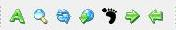

counts word and letters in the active editor window. It doesn't count tex tags. Comments are also counted and displayed.
Creates a new pdf file for the selected text. It creates a new tex file with the selected editors filename.partial.tex
re-builds the active editor's pdf file
inserts hyperlink tag to the cursor's position
inserts footnote tag to the cursor's position
Commentsin or outs the selected lines.